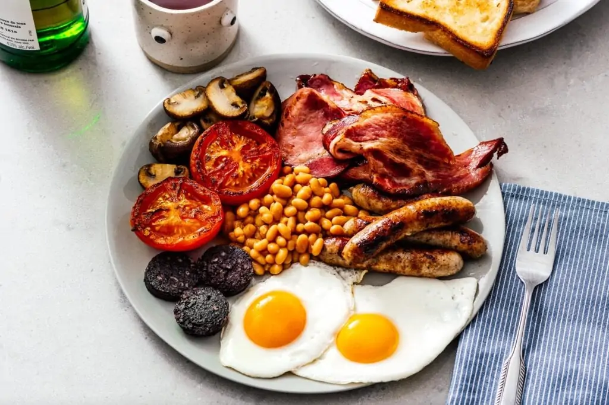
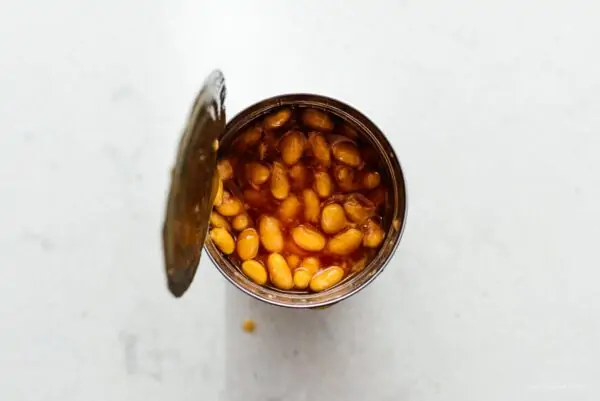
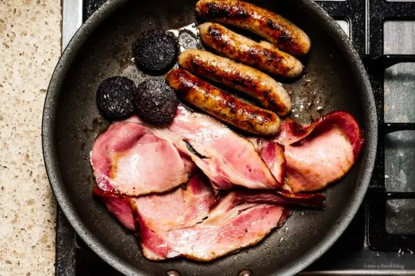
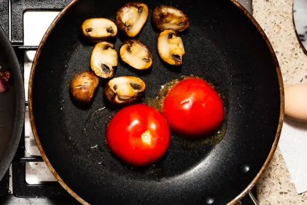
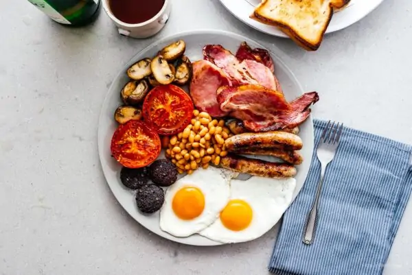

Recipe to having the BEST british breakfast!

Sometimes called a fry up, a full English is a hearty,
hefty breakfast plate served in the UK and Ireland. Full English
breakfasts are so popular that they’re pretty much offered throughout
the day as all-day breakfast. Full English breakfasts contain: sausages,
back bacon, eggs, tomatoes, mushrooms, fried bread, and beans.
Here is the recipe/ingredients
- 1 can beans Heinz preferred
- 4 links sausages breakfast sausage preferred
- 4 slices back bacon or Irish bacon
- 4 slices black pudding optional... some say
- 1 cup mushrooms halved or sliced
- 2 small tomatoes halved
- 4 slices bread
- 4 eggs
Instructions in making the BEST british breakfast:
- Heat up the beans over low heat in a small pot or in
the can itself, and keep it running on warm.

- Cook the sausages over medium to medium low heat, turning occasionally,
until brown and cooked through. In the same pan, cook the bacon,
flipping as needed. Fry the blood
pudding slices over medium heat for 3-4 minutes per side.

-
In another pan, heat up a bit of oil and cook the mushrooms,
without moving, until brown and caramelized. Remove from the pan,
then sear the cut side of the tomato briefly.
Remove from the pan, season everything with salt and pepper.

- Lastly... Wipe the pan down and heat up a bit of oil or
butter over medium heat. Fry the bread until golden,
flipping and adding more oil or butter as needed. Remove and set aside.
Finally, fry the eggs to your liking. Plate everything up: sausages,
bacon, black pudding, mushrooms, tomato, bread, and eggs.

Enjoy immediately!
Back to Homepage
Original Authors: iamafoodblog.com